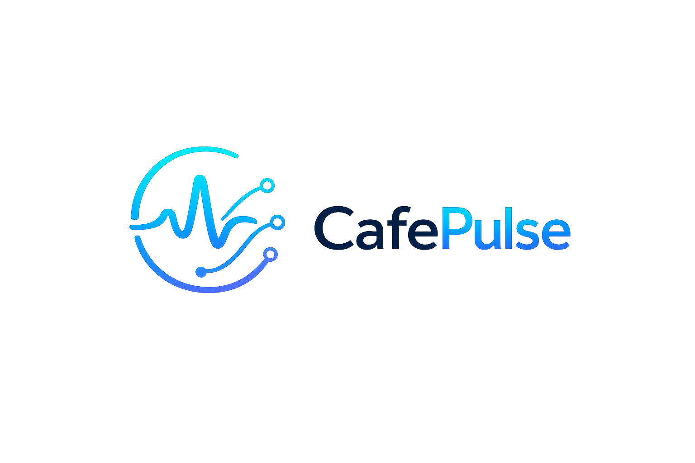

A modern, lightweight, local-first network monitoring and voucher management tool. Access deep diagnostics, DHCP lease details, and live stats without sending data to the cloud.
CafePulse is architected for modern network administrators, solo IT operators, and RT/RW net businesses.
All credentials, router logs, database statistics, and credentials are saved locally in SQLite. No registration, no external logins, and no telemetry tracking.
Connects directly using RouterOS API for high-speed commands. Handle DHCP lease assignments, active hotspot controllers, and system resources in real-time.
Reflows fluidly from small laptops to ultra-wide operations screens. Featuring built-in Cyber-Dark and Classic Light layouts designed for long operational shifts.
Create up to 500 hotspot vouchers at a time with custom prefixes, durations, and speed limits. Export directly to printable, clean PDF grids in seconds to supply your shop or location operations instantly.
No extra configuration servers needed. Directly injects voucher parameters into your RouterOS database with high-performance validation checks.
Explore All Features
Support the development of an offline-first network manager. Secure a 5-Year Update Entitlement, exclusive Discord access, and name listing in-app for only Rp499.000 (limited to the first 100 spots). Core software remains fully functional locally offline after the update entitlement expires.
Become a Founder